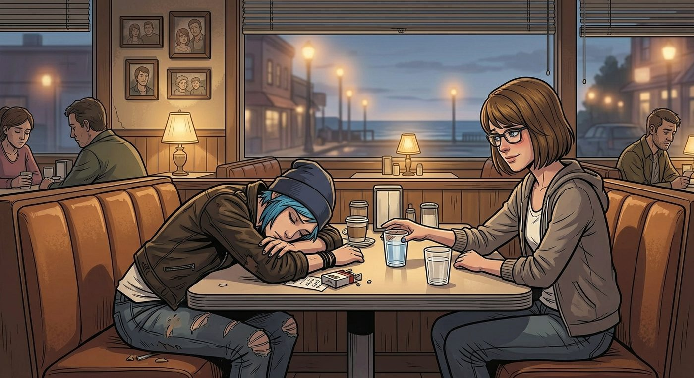

實習週

一、溫馨提示
放假前最後一次全校集會,Wells 校長站上講台,語氣一如既往地充滿激情。
「為了拓寬各位同學的職涯視野,」他清了清嗓子,身後投影幕打出一張色彩繽紛的簡報,「校方特別與幾家指定企業合作,推出『菁英實習計畫』。凡是選擇這幾家合作企業實習的同學,將額外獲得學分加成,實習時數也會相應縮減,並附有現金津貼——絕對不是要白白佔用大家的勞動力,這是校方回饋學生、培養未來人才的誠意展現!」
底下一片議論聲。有心思靈活的學生已經悄悄拿出手機,搜尋那幾家「合作企業」的背景資料——搜尋結果顯示,清一色都是校董事會成員、地方政客,或者鎮上幾位金主的親友名下產業。
「懂的都懂,」Warren 小聲跟 Brooke 咬耳朵,「這擺明就是幫他們家親戚公司,湊那個政府合規指標的免費人力吧。」
「說是這麼說,」Brooke 聳肩,「但學分加成是真的,時數縮短也是真的,不去白不去。」
大部分同學最終還是排隊登記了名字——包括 Chloe。
Max 湊過去,一臉意外:「妳這次居然沒打算搞事?」
「這次不了,」Chloe 嘆口氣,語氣裡帶著點認命的疲憊,「修車費還沒還完,能少上點實習時數又有津貼拿,哪怕明知道是被人佔便宜,我這次選擇閉嘴賺這筆錢。」
二、實習週的第一天
Chloe 被分配到一家名義上做「社區資源整合顧問」的小公司——說穿了,就是某位鎮議員侄子開的空殼型顧問行,辦公室裝潢得富麗堂皇,卻沒幾個真正在做事的員工。
第一天上班,她就被拖進一場長達兩小時的會議,主題是「本季度願景對齊與價值觀共識」。整場會議翻來覆去講著同一套空洞的口號,沒有任何具體結論,唯一的產出是會議結束前,主管要求每個人輪流分享「今天的一句感悟」。
Chloe 面無表情地擠出一句:「團結就是力量。」
主管滿意地點頭記錄下來。
下午,她被塞進一套精確到分鐘的工時追蹤系統,螢幕上密密麻麻地列著各種待辦任務標籤,每完成一項都要手動打卡記錄耗時,美其名曰「提升效率透明度」。她光是搞懂這套系統怎麼操作,就耗掉了將近半小時,而這半小時,系統貼心地自動歸類成「系統熟悉時間」,不計入有效工時。
與此同時,她的手機從早到晚不間斷地被拉進各種名目奇怪的工作群組——「創新思維交流群」「企業文化建設群」「每日正能量分享群」,訊息提示音幾乎沒停過。「每日正能量分享群」裡,主管每天早上七點準時轉發一篇來路不明的雞湯文章,標題諸如《成功人士都有的五個清晨習慣》,底下要求所有人「回覆已閱並簽到」,遲了超過十分鐘沒回覆的,會被單獨 @提醒。
「這位同學,」一名資深員工湊過來,指手畫腳地「指導」她如何排版一份簡單的 Excel 表格,「妳這個欄位順序不對,要先放日期再放金額,這是我們公司的規矩。」
Chloe 忍住翻白眼的衝動,乖乖照做——雖然那名員工顯然對 Excel 的基本操作,遠不如她熟練。
好不容易熬過那份表格,她又被叫去參加一場臨時插進來的「跨部門協作腦力激盪」,會議室裡擺著一塊寫滿箭頭和圓圈的白板,主持會議的經理激動地講了四十分鐘「顛覆性思維」,最後的具體行動項目,只確定了下次開會的時間。
散會後,Warren 剛好也在附近的合作企業實習,兩人在茶水間偶遇,Chloe忍不住吐槽了幾句。
「忍忍就好,」Warren 一邊泡著即溶咖啡一邊安慰她,「我這邊也差不多,反正就當是提前體驗社會毒打,學分和津貼到手就行。」
「妳想開點,」湊巧路過的 Brooke 也搭話,「這種公司,做做樣子而已,不會真的把妳當自己人使喚太久,忍過這幾天就解脫了。」
Chloe 剛想反駁,又看到 Kenji 從另一頭的辦公室悠哉地走過來,手裡端著一杯現煮的手沖咖啡,神情放鬆得像是在度假。
「你怎麼看起來一點都不累?」Chloe 狐疑地打量他。
Kenji 神秘地笑了笑,壓低聲音:「跟妳說個秘密。」他劃開手機螢幕,展示了一套自己私下搭建的自動化系統,「我寫了個腳本,結合語音克隆和自動回覆邏輯,能模擬我的打字習慣和說話語氣,自動處理那些例行公文、群組簽到、還有大部分不需要臨場應變的例行會議紀錄。我只要每天挑幾個關鍵時段,親自露個面裝忙就行,剩下的時間全部解放。」
Chloe 目瞪口呆:「這不是作弊嗎?」
「這是效率優化。」Kenji 糾正她,語氣理直氣壯。
更離譜的是,一週實習結束後的表彰大會上,Kenji 憑藉「高效、細膩、超前的工作彙報品質」,被評選為本次「菁英實習計畫」的最佳實習生,公司總經理當眾拍著他的肩膀,語重心長地表示已經預留了一個管培幹部的名額,希望他畢業後直接入職。
Kenji 站在台上,笑容維持得恰到好處,眼神卻不動聲色地瞄了台下目瞪口呆的 Chloe 一眼。
Chloe 坐在台下,看著那個靠著 AI 影分身矇混過關、還意外拿了大獎的傢伙,一時竟不知道該羨慕還是該生氣。
三、後樓梯的避難所
到了下午三點,Chloe 已經第三次溜到辦公大樓的後樓梯間抽煙透氣,又或者藉口下樓買咖啡,躲開那些連環不斷的會議通知和訊息轟炸。
她靠在樓梯間冰冷的欄杆上,深吸一口煙,長長地吐出一口氣,像是要把一整天積攢的煩躁都跟著呼出去。
咖啡杯裡的黑咖啡已經涼了大半,她一口氣灌下去,胃裡傳來一陣隱隱的不適。
四、抱怨大會
下班後,Chloe 拖著疲憊的身軀,癱進雙鯨餐廳的卡座裡,Max 端著兩杯溫水在她對面坐下。
「怎麼樣?」
「別提了,」Chloe 揉著發脹的太陽穴,「開了快三小時的會,一個能落地的結論都沒有。手機群組多到我乾脆設成靜音,結果他們又跑來『提醒』我沒看訊息不禮貌。一個外行天天在旁邊教我怎麼做內行的事,我這一天,實際做正經事的時間,加起來大概不到一小時。」
她揉了揉喉嚨,聲音有點沙啞:「喉嚨都快講話講乾了,光是應付那些空話就耗光了。」又皺眉按了按胃口的位置,「胃也不太舒服,可能是咖啡灌太多,又或者是被氣的。」
Max 心疼地推過去一杯溫水:「妳慢點喝。」她想了想,忍不住笑出聲,「照這個節奏算下來,妳耗掉的煙錢跟咖啡錢,搞不好比那點實習津貼還高,妳這是倒貼著上班?」
Chloe 沉默了兩秒,深深地嘆了口氣,一臉生無可戀地把臉埋進手臂裡。
「我現在,」她悶聲道,「有點後悔上了這艘賊船。」